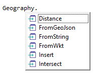

It is a method that instead of being applied to a variable or an attribute it is applied directly to the data type. In the following example, the FromString Method is being applied to the Geography data type. The method is receiving a string with a geography point in order to convert it to a Geography data type value and then, the result is assigned to an attribute based on the Geography data type.
VenueGeography = Geography.FromString("POINT(-56.152690 -34.894511)")
In the particular case of the FromString Method, it can be used also applied to a variable or an attribute, but it does not happen with all the methods. So, in order to know which methods are available for a certain data type or a variable or an attribute, you should write the data type name or the attribute or variable with which you are working followed by a dot and the allowed methods will be suggested:  Another example is shown below: &ExpirationDateTime = DateTime.New(2018,6,5,18,0,0,0) In this case, the New() static method is being applied to the DateTime data type. The method is receiving certain numbers as parameters to make up a specific date with a specific time in a DateTime data type. Then, the result is assigned to a variable based on the DateTime data type.
|